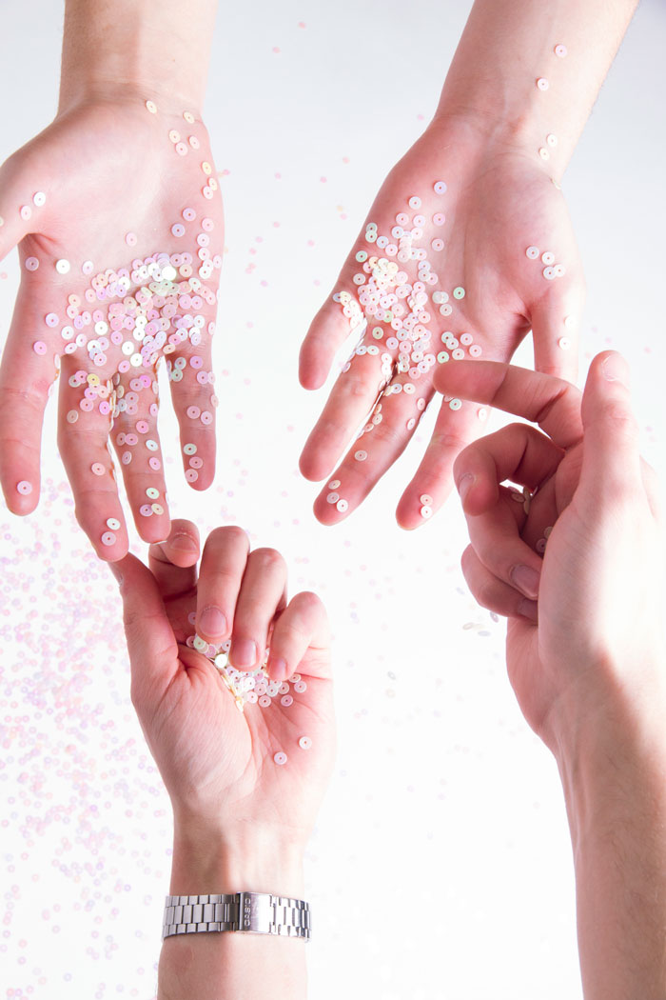
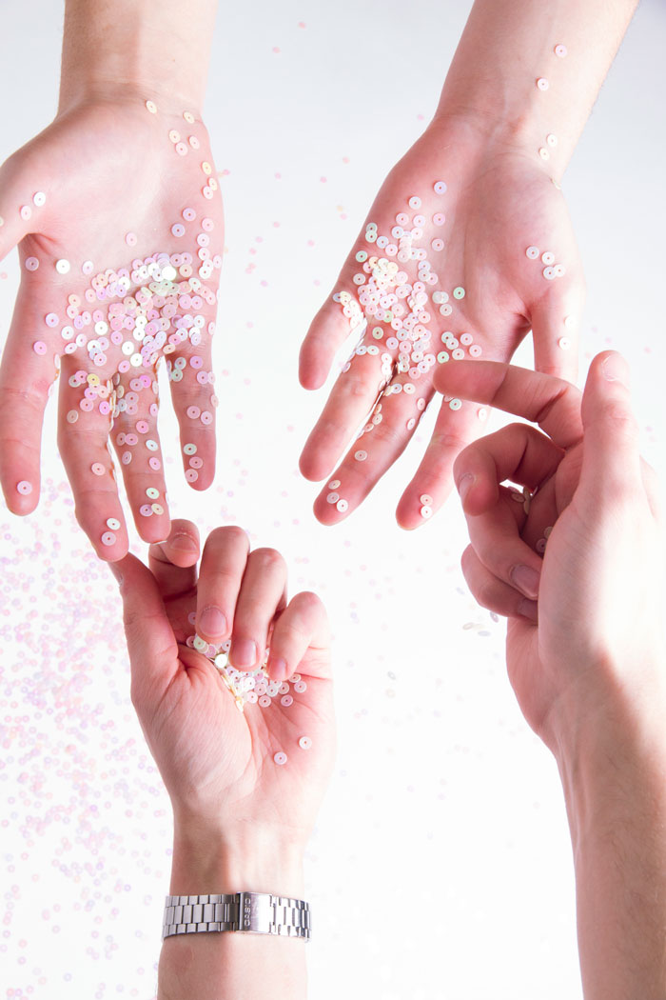

Cette affiche illustre l’une des pièces du Théâtre 71, Scène Nationale de Malakoff, intitulée La Septième, de Marie-Christine Soma, d’après Tristan Garcia. L’affiche reprend l’identité graphique du théâtre conférée par l’agence de graphisme Brest Brest Brest. Elle met en avant la multiplicité des vies du protagoniste de la pièce.

 
